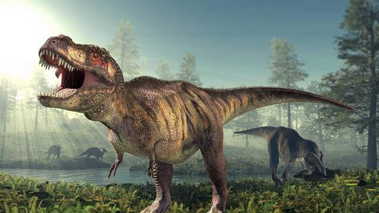

Souhaitez vous visiter Wikipedia ?
Pour l'instant il possède plus de renseignements que moi, mais il va devoir faire face à un nouveau concurrent sur l'étude des dinosaures ;) !
Tenez, allez faire un tour là-dessus: Seconde Page !
Aller directement à la partie de votre choix :
Une époque rare
Les dangers ne sont pas que terrestres
Si nous existions à ce moment
Bon c'est l'époque où vivaient les dinosaures.
Le Crétacé était une période géologique qui s'étend d'environ 145 à 66 Millions d'années. Elle se termina avec la disparition de nos chères amis les dinosaures non aviens, des ammonites et de nombreuses autres formes de vie.
Cette période est la troisième et dernière(snif :'() de l'ère Mésozoique; elle suit le Jurassique et précède le Paléogène.
Sa fin est marquée par un stratotype riche en iridium que l'on pense associé à l'impact d'une météorite dans le Yucatan. Cette collision est considérée comme ayant participé fortement à l'extinction massive ayant entraîné entre autres la disparition des dinosaures.
Néanmoins, la géologie montre que l'activité volcanique de grande ampleur commune aux cinq grandes extinctions avait déjà commencé avant l'arrivée du bolide
Le Crétacé est nommé d'après le latin creta, "craie", se référant aux vastes dépôts crayeux marins datant de cette époque et que l'on retrouve en grande quantité en Europe, notamment dans le Nord de la France et en Grande-Bretagne. Il a été défini par Jean-Baptiste d'Omalius en 1822 d'après des couches stratigraphiques présentes dans le Bassin parisien.
Certains anciens textes français emploient plutôt le terme Crétacique.
Le Crétacé est divisé en deux époques: le Crétacé inférieur et le Crétacé supérieur.
Bon c'est vrai y a des dinosaures marins très dangereux, quand je dis très c'est très dangereux,
Parmi ces "dinosaures marins" (j'emploie le terme "dinosaures marins" car ces créatures marines vivaient à l'époque Crétacique, celle des dinosaures).
Parmi ces créatures marines, il y avait l'ichtyosaure (du grec ichtyosauria qui veut dire "lézard poisson") ils étaient des reptiles marins diapsides qui vivaient au Mésozoique. Ils sont apparus 10 à 20 millions d'années avant les dinosaures, donc 250 millions d'années, et se sont éteints au début du Crétacé supérieur, voici 90 millions d'années. Leur disparition s'expliquerait par la concurrence sans cesse croissante qu'ils ont subie de la part des mosasaures et des plésiosauriens.
Ils mesuraient entre 1 et 20 mètres de long. Ils se déplaçaient à l'aide de puissantes nageoires jusqu'à 40 km/h, selon certaines estimations et en fonction des espèces. Ces reptiles étaient vivipares et se nourrissaient essentiellement de poissons, de bélemnites et d'ammonites, qu'ils saisissaient au moyen d'un museau allongé pourvu de dents pointues.
Globalement, leur corps ressemblait à celui d'un dauphin actuel. Ils étaient donc adaptés à la vie pélagique, pouvaient desecndre à de grandes profondeurs, mais aussi réaliser des bonds en surface.
Il y a aussi les mosasaures, c'est une famille éteinte de grands reptiles carnivores qui peuplaient les océans du globe durant le Crétacé. En effet, ces créatures marines seraient apparus voici 100 à 146 millions d'années, avant de disparaître durant la crise du Crétacé-Tertiare, voici 65,5 millions d'années.
Selon les espèces, ces reptiles au sang chaud réadaptés à la vie marine mesuraient entre 3,5 et 18 mètres de long. La forme de leus dents suggère qu'ils étaient des prédateurs opportunistes qui se nourrissaient de poissons, de calmars ou d'autres reptiles marins.
En 2013, il est apparu qu'au moins une espèce avait conquis des milieux aquatiques dulçaquicoles et que leur nageoire caudale ressemblait à celle d'un requin à la fin du Crétacé, mais avec le haut en bas et vice versa.
Il y également les mosasaures (du grec : plesios"proche de" et sauros, "lézard") sont de grands vertébrés diapsides aquatiques, que l'on a longtemps classés parmi les reptiles. Il a parfois été dit familièrement qu'ils ressemblaient "à une tortue avec un serpent au travers du corps", bien qu'ils n'aient pas de carapace.
Le nom de "Plésiosaure" est appliqué aussi bien aux "vrais" plésiosaures de la super-famille ici décrite des plésiosauroidés qu'au clade supérieur des plésiosauriens, qui comprend à la fois les formes aux longs cous (plésiosaures) et à cous courts (pliosaures).
Les plésiosaures occupaient les niches écologiques des actuelles tortues marines, pinnipèdes et manchots, depuis le tout début de la période jurassique et jusqu'à l'extinction du Crétacé. Bien qu'étant de grands diapsides du Mésozoique, ce n'étaient pas des dinosaures.
Bon là c'est sérieux, si nous existions à ce moment là, on serait peut être en danger, je ne serai même pas là à vous écrire cela...
Je serai en train de buter des dinos :D
Oui j'adore ça les dinos.
Bon venez pas me demander pourquoi ils m'interressent, on va dire qu'ils ont du charisme, beaucoup de charisme, surtout les raptors et leur cousin le Déinonychus, retenez bien ce nom mes très chers, il est mon préféré de la famille des raptors.
Si vous voulez m'envoyer un mail, c'est par là :) Voilà cadeau les coupains !
Vous voulez des fonds d'écrans de dinos ?
Les voici : Sorry, pour le moment le téléchargement de fonds d'écrans n'est pas disponible, revenez plus tard !
Voilà une petite image de dinosaure pour vous ! :
